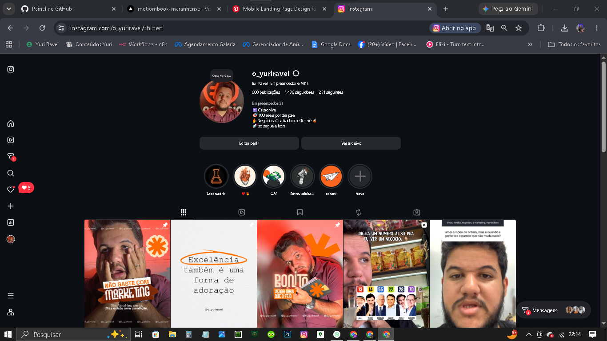

Não sou uma profissão.
Sou um ecossistema.
Um olhar criativo, uma cabeça inquieta e a vontade de transformar ideias em coisas que existem. Esta página é o capítulo mais humano desta presença digital.

Yuri Ravel — criador, empreendedor e estrategista.
Eu transito entre design, branding, marketing, audiovisual, tecnologia, inteligência artificial e criação de produtos. Não porque quero acumular rótulos, mas porque problemas reais raramente respeitam uma única disciplina.
Minha curiosidade me leva a aprender, testar e construir. Quando vejo uma oportunidade, minha pergunta não é apenas “como deixar bonito?”, mas “como isso pode funcionar de verdade?”.
Entre a ideia
e a realidade.
Eu gosto de conectar pontas: estética com negócio, conteúdo com distribuição, tecnologia com experiência, IA com produtividade e visão com execução.
Observar
Entender pessoas, contexto, mercado e o problema antes de desenhar a solução.
Construir
Transformar pensamento em algo concreto: identidade, protótipo, site, conteúdo ou produto.
Colocar no mundo
Testar com gente de verdade. Tirar o projeto do ambiente seguro e buscar resposta real.
Melhorar
Usar feedback, dados e experiência para fazer a próxima versão mais forte.
Mais que carreira.
Uma vida.
Fé, família, negócios, criatividade e liberdade fazem parte da equação. O objetivo não é simplesmente trabalhar mais; é construir uma vida com significado e autonomia.